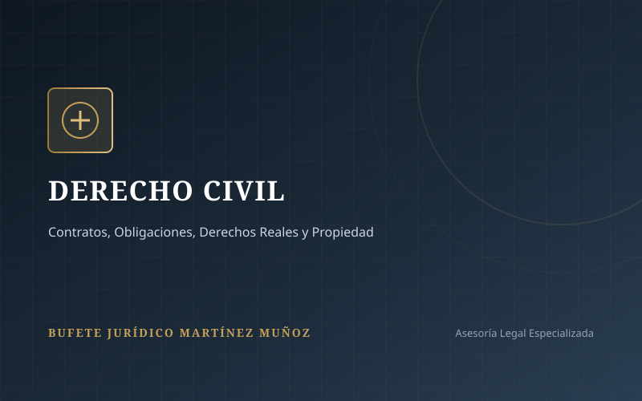

Materia CivilDerecho Civil
Asistencia y asesoría legal en contratos civiles, obligaciones, propiedad, arrendamientos y derechos patrimoniales.
- Redacción, revisión y rescisión de contratos civiles.
- Juicios de posesión, deslinde, usucapión y reivindicación.
- Cobro de créditos, títulos ejecutivos y obligaciones.
- Sucesiones hereditarias testadas e intestadas.